01 · The result
The problem, and the result
A lens can only focus at one distance. Anything nearer or farther is blurred by the optics — the deeper the scene, the worse the compromise. Focus stacking takes several photographs of the same scene focused at different depths and fuses them into one image that is sharp everywhere.
Below: two real light-field captures — one focused on the chain-link fence, one on the players behind it — and the engine's fusion. Both the fence and the gym are sharp, with no halo around the wires:
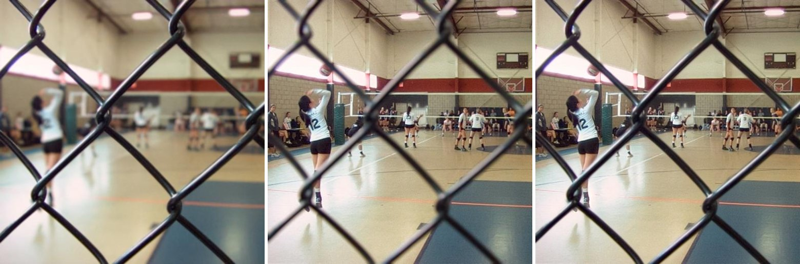
focusstack output — everything sharp.This is a genuinely hard case: the fence is a thin, high-contrast structure over a sharp background, the exact geometry where classical fusion methods leave bright halos or grey, ghosted wires.
02 · Anatomy
How it thinks
The engine's reasoning is visible. For the fence pair, left to right: where it measures sharp detail, which frame wins each pixel, the cleaned-up weight it actually uses, and the fused result:
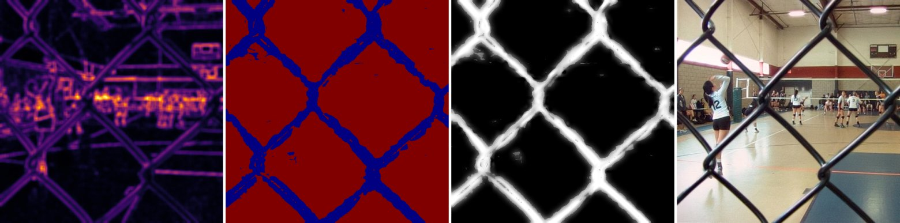
That strip is the whole philosophy in one image: measure sharpness, decide per location, clean the decision so it follows real object edges, then reconstruct without seams. Everything below is the mathematics of doing each step right.
03 · The mathematics
The five ideas
1 Focus is high-frequency energy that survived
Defocus is a physical low-pass filter: a point at depth images to a disk (the circle of confusion) with radius proportional to its distance from the focal plane, . Blur with a disk kernel erases fine detail — so sharpness is simply the high-frequency energy that survived. We measure it with second-derivative operators, pooled over a small window for noise robustness:
One measured subtlety: on smooth, low-contrast surfaces (polished metal, gradual
shading) the signed Laplacian can cancel — curvature in
offsetting curvature in — hiding real focus. The modified Laplacian
can't cancel, and measurably wins there. The engine routes
between the two per pixel by local contrast (content_aware), so textured and
smooth regions each get the operator that suits them.
2 Decide, then clean the decision — with no edge detector
The raw per-pixel winner map is speckled (noise flips ties) and ragged at object boundaries. We clean it with a guided filter: inside each local window, fit the weight map as a linear function of the image itself:
Where the image is flat, is small, , and the decision is smoothed. Where the image has a real edge, is large, , and the decision snaps to that edge. Edge-awareness emerges from local variance — there is no explicit edge detector to tune, and the whole filter is a handful of box filters (O(1) per pixel, any radius).
3 Decide per scale — the centerpiece
The deepest lesson of this project: a single decision scale cannot be right. A window tuned for 500-pixel images is far smaller than the blur disks in a 4K image; scale it up globally and it destroys exactly the fine details high resolution exists to capture. Measuring a local scale map helps, but there is a cleaner answer.
Decompose each frame into a Laplacian pyramid — a stack of frequency bands:
where each band holds exactly the detail the next blur-and-halve removed (reconstruction is exact: collapse by -and-add). Now make the edge-aware decision of idea 2 independently at every band, with one fixed small window. Because band is downsampled , that fixed window automatically covers the area at full resolution:
This method — perband, the engine's default — is the unique combination of four
properties, each of which we watched fail when absent:
| Property | Without it |
|---|---|
| Edge-aware decision (idea 2) | speckle and seams (max) |
| Confidence-hardened decision (idea 4) | greyed thin structures, defocus-spread bleed |
| Multi-scale decision (idea 3) | ranking reversals between low-res and high-res |
| Multi-band reconstruction | visible seams at region transitions |
Classical Laplacian-pyramid fusion has the multi-scale decision but no edge-awareness — it halos. Guided multiband blending has edge-awareness but one single-scale decision — it softens fine detail at high resolution. Look:
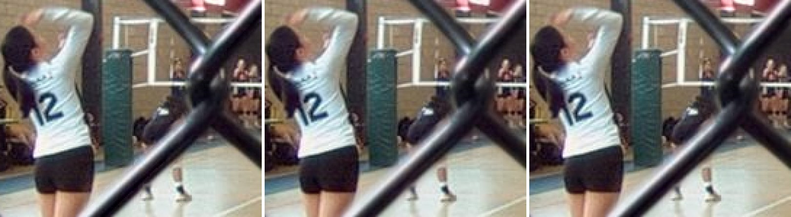
perband:
clean and the sharpest wire edges.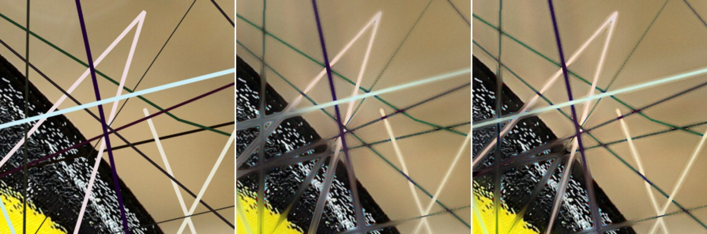
perband keeps them thin. Not yet
perfect — this is the hardest regime we test — but clearly closest to truth.4 Confidence hardening — one formula, two rescues
Soft blending has a failure mode: where one frame is decisively the sharp one (a hair, a wire, a bright point), blending in the other frame's contribution imports its defocus — thin structures fuse grey, and bright out-of-focus disks ("defocus spread") bleed over sharp backgrounds. The fix is to measure decision confidence from the top-two focus energies,
and push the weight toward a hard selection exactly where confidence is high, keeping soft blending where focus is genuinely ambiguous. One mechanism, two failure modes cured:
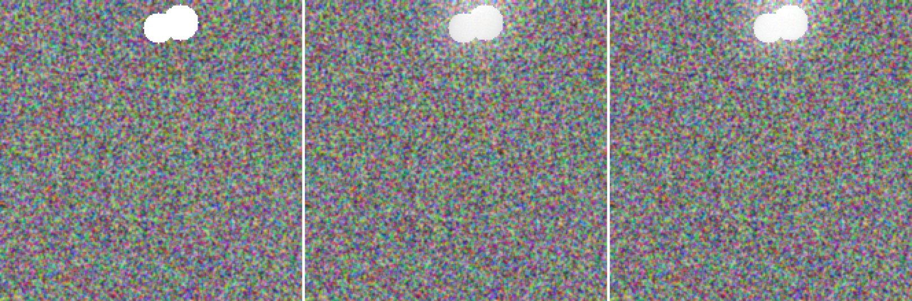
5 Physical invariants make it robust for free
Real capture wobbles: auto-exposure drifts brightness and white balance between frames, which measurably breaks fusion (−0.025 SSIM in our drift benchmark). The fix rests on a small theorem: blur preserves the mean — a defocused frame has (essentially) the same channel means as a sharp one. So any difference in frame means within a stack is exposure, never focus, and a per-frame scalar gain toward the stack median removes drift without touching focus content. It is provably near-identity on undrifted stacks, so it runs by default:
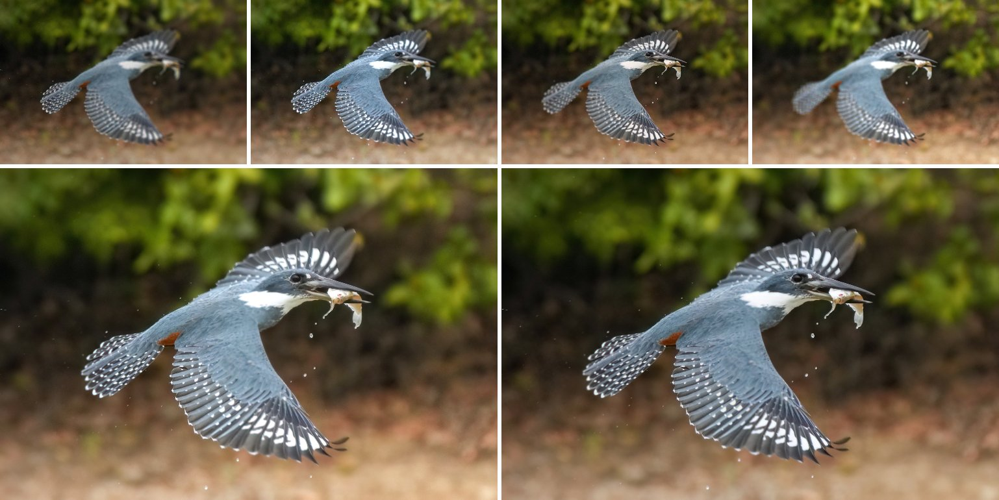
And a byproduct falls out for free: in an -frame stack, which frame wins each
pixel encodes depth — the winner index is a coarse depth-from-focus map
(--depth-out):
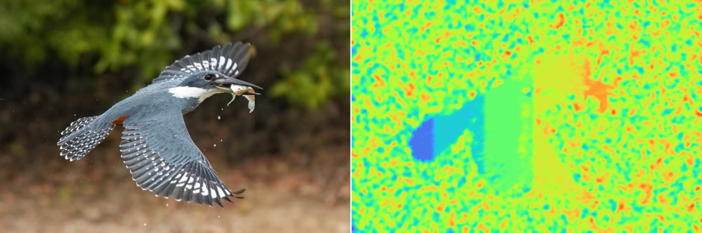
04 · Ground truth
Real optics, not just synthetic
Everything above must survive contact with real defocus — actual lens physics, not simulated disks. On real fluorescence-microscopy z-stacks (BBBC006, genuine optical defocus, three focal planes):
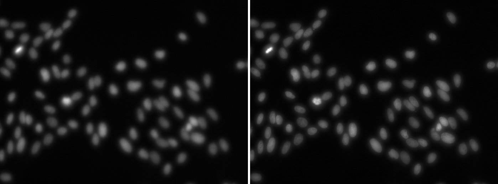
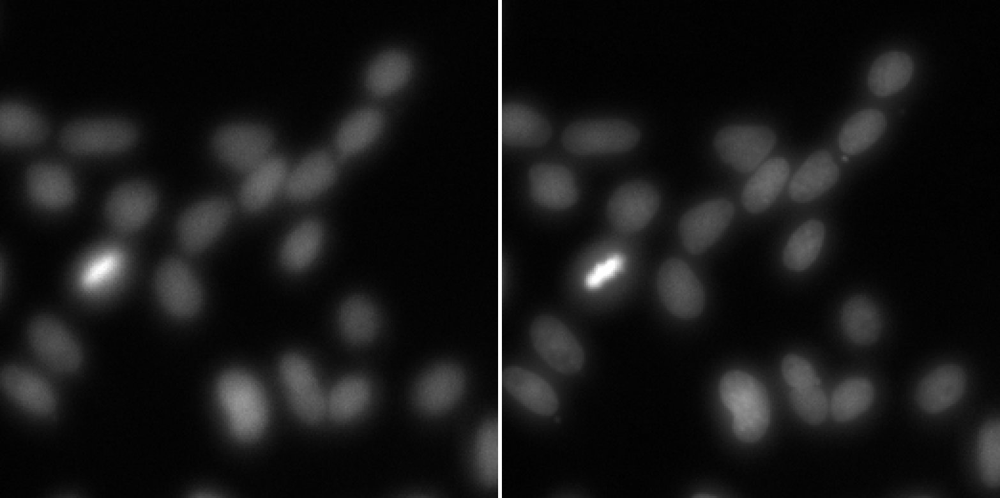
perband is the
sharpest, confirming the synthetic conclusions on genuine optics.05 · Specialists
The specialist layer — routing, gates, and refusal
The generalist engine above is what every stack gets. On top of it sit specialists: narrow mechanisms that fix physics the generalist provably cannot — a lens mixes both sides of a depth boundary into the captured pixels, so no weighting scheme can unmix a contour, and none can recover a wide occluder's latent background. One narrow mechanism is live: contour reconstruction (thin occluders — wires, stems, hairs: re-renders the contaminated boundary band from a pixel-precise difference matte, purely classical). Joint-layer giant-veil recovery is retained as a safety-disabled research path. It solves both captured formation equations, physically reranks semantic candidates, retains only regularizer/PSF-consistent components, and vetoes edits where focus evidence assigns ownership to foreground. Semantic support seen only in the sharp owner frame may be a detached fragment or the novel tail of a containing parent silhouette. Both must independently improve captured-frame fit; the broader parent also needs strong containment, IoU, and relative gain before its observed novel pixels can override mixed fusion. F62 lets a forward-winning focused-owner silhouette replace mixed-base geometry, directly reconstructs its optically partial front interior, and only then invokes F61's positive rear-observation rule. This closes the foreground- partition tail on both diagnosed fires and the S16 counterexample. A genuinely post-final 72-scene S19 split then yields three all-partition-positive fires and 69 exact refusals. Auto enhancement still refuses every veil case because all seven current fires retain a small positive finest-band error on otherwise- smooth veil pixels.
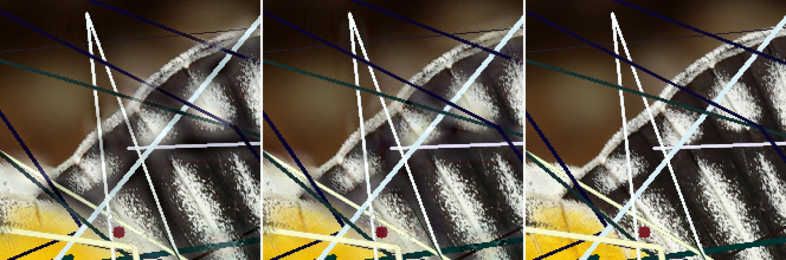
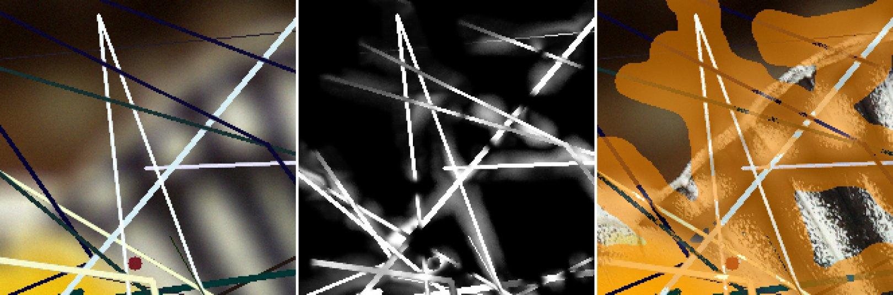
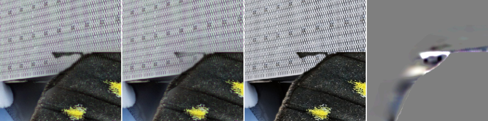
perband, owner-support-completed joint-layer recovery,
physical ground truth,
and the signed edit amplified 5×. The horizontal veil at the black boundary is
attenuated toward the clean GT edge; the recovery does not fully reach GT. The
amplified panel localizes the edit, not its severity. MAE improves 10.087 → 9.899
and GT-SSIM +0.00116; the +0.013-gray false-texture-index contour tail is disclosed.The contour specialist sits behind an outcome-trained gate: candidates are scored on factory scenes with exact ground truth. F54 also exposed the limit of that recipe: a gate inherits its factory and labels' blind spots. F56's replacement adds observation-domain reranking, cross-model consensus, an independent focus-ownership veto, and physically licensed semantic fragments from the sharp owner frame. F59 extends that ordering evidence to containing parent silhouettes while hard-selecting only their novel support. F60 demotes the V1 promotion scores because their large-radius “disk” used a box shortcut. On exact-disk V2, the unchanged oracle ceiling is positive and a frozen 36-scene extension independently reconfirms parent support, but one of two fires worsens inner partial foreground. The model stays in research and the runtime veil path is identity. The former real-photograph subtraction fire is retained below as an audit artifact:
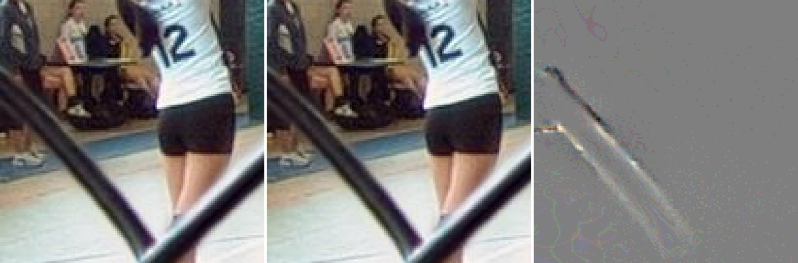
The design rule this arc proved: a specialist must be paired with its regime
and matte class; its operator must first have a positive realistic oracle ceiling;
forward fit needs independent ownership evidence inside blur's null space; and every
unvalidated regime must refuse. If both specialists stay silent,
--enhance auto is byte-identical to the base engine.
06 · Measured
The evidence, in one table
Every number is GT-referenced SSIM against a true all-in-focus reference unless noted; each row is a different validation regime, because the project's core discipline is that a verdict in one regime is a hypothesis in every other.
| Regime | Result | Honest caveat |
|---|---|---|
| Low-res, real content + GT (Real-MFF, 710 pairs) | perband 0.9918 > blend 0.9915 > pyramid 0.9913 | near-ceiling data; differences small but consistent |
| High-res (3072px) fine-depth benchmark | perband 0.9021 > pyramid 0.8926 > blend 0.8704 | synthetic (disk-PSF) defocus on real photos |
| Occlusion-honest (α-matte layered defocus) | perband 0.9434 > pyramid 0.9308 > blend 0.9283 | perband's lead widens under more honest physics |
| Real optical defocus (microscopy z-stacks) | perband sharpest — eye-confirmed | no GT exists; no-ref metric ordering confirmed visually |
| Deep stacks (N = 2 → 8) | quality rises with N for every method | broad soft weights act as multi-frame denoising |
| Exposure drift (±12% + WB tilt) | −0.025 SSIM broken → −0.002 with default-on fix | clipped highlights slightly weaken the mean invariant |
| Joint giant-veil recovery (exact package) | research retained, runtime disabled; front-first ordering is all-partition-safe on 2 diagnosed fires, the repaired S16 counterexample, and 3/3 genuinely post-final S19 fires | small positive smooth-veil finest-band tail remains; no shipping claim |
The metric itself got the same treatment as the engine: the standard gradient-transfer metric (QAB/F) collapses at high resolution for the same fixed-window reason — so it, too, was made multi-scale (per pyramid level, mean-pooled), and the resulting composite is the best GT-predictor at both resolutions (+0.785 / +0.869 Spearman).
07 · CLI
Run it
focusstack shots/*.jpg -o sharp.png # perband default, drift-corrected
focusstack shots/*.jpg -o sharp.png --harden 0 # disable spread rejection (on by default)
focusstack big/*.png -o sharp.png --fast # ~1.5x; costs ~0.005–0.025 GT-SSIM
focusstack shots/*.jpg -o sharp.png --depth-out z.png # + depth-from-focus map08 · Frontier
This is only the beginning
The engine is the foundation of a leading-edge system, not the finished one. The
frontier is tracked live in research/FRONTIER.md —
probed items spawn new sub-frontiers, and several were closed as rigorous
negatives (occlusion de-veiling loses even with oracle knowledge; deep-stack
spread import doesn't materialize), which is the discipline working: settled
questions, not lingering doubts.
Near-term, already scoped
Bigger swings, with groundwork already laid
The deeper record: research/FINDINGS.md (56 dated
findings + a living synthesis), research/PLAYBOOK.md
(domain knowledge and every trap we hit), and
research/DEVSTYLE.md (the working method that produced
all of it — hypothesis → measure → look → A/B → gate — so any future session starts
where this one leaves off).